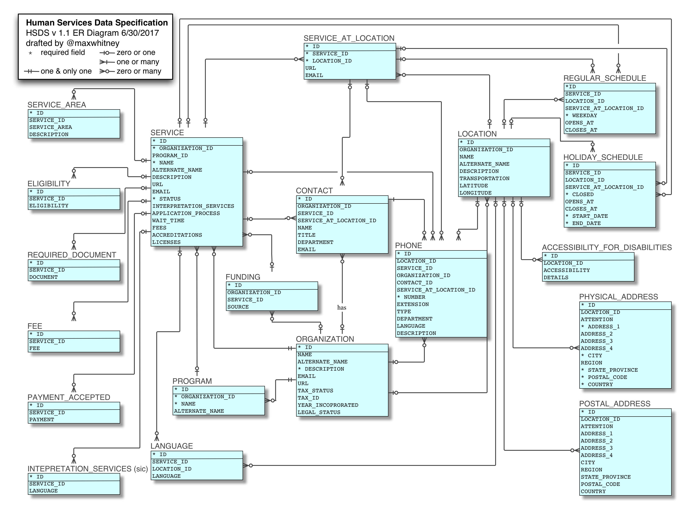

Logical Model¶
There are four core tables in HSDS:
- organization - that provide services;
- service - that have descriptions, classifications and other information to allow potential service users to identify those services that can meet their needs;
- location - where services are delivered - either physically, or virtually (over the phone or Internet);
- service_at_location - a link table used to record where particular services are available, and to over-ride any default service or location information, with information specific to the service at a specific location.
Additional information about organisations, locations and services is held in separate tables and linked by a foreign key. Some tables only have a single foreign key for a single core table. Others can be linked to different core tables.
The table below indicates the foreign keys that exist.
| Table | organization | service | location | service_at_location |
|---|---|---|---|---|
| programs | X | |||
| funding | X | X | ||
| service_taxonomy | X | |||
| phone* | X | X | X | X |
| contact | X | X | X | |
| regular_schedule | X | X | X | |
| holiday_schedule | X | X | X | |
| eligibility | X | |||
| service_area | X | |||
| required_document | X | |||
| payment_accepted | X | |||
| language | X | X | ||
| physical_address | X | |||
| postal_address | X | |||
| accessibility_for_disabilities | X |
*Phone can also be linked to contact.
When a single row contains multiple foreign keys, these will be interpreted as 'OR' relationships.
E.g. a phone number applies to the service OR the organisation OR the service_at_location.
ER Diagram for HSDS v 1.1¶
ER Diagram HSDS v1.1